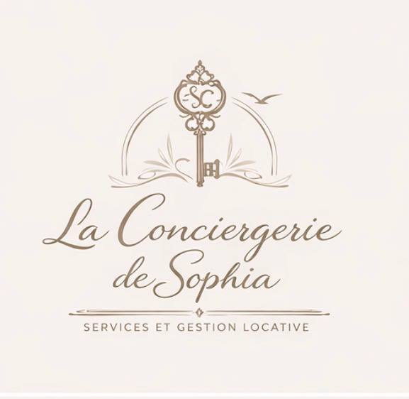

Voyageurs
Messages, informations d’arrivée, assistance pendant le séjour et suivi du départ.

La Conciergerie de Sophia Confier mon logementPropriétaire à Saint-Dizier ? Déléguez la gestion quotidienne de votre location courte durée : voyageurs, ménage, linge, préparation du logement et suivi.
À Saint-Dizier, la location courte durée ne dépend pas uniquement des week-ends touristiques. La présence de la Base aérienne 113, d’entreprises industrielles et du centre hospitalier crée aussi des besoins liés aux déplacements professionnels. À cela s’ajoute le Lac du Der, situé à proximité, qui attire une clientèle loisirs à différentes périodes de l’année.
Un service clair et flexible pour t’éviter les tâches répétitives tout en maintenant une expérience soignée pour les voyageurs.
Messages, informations d’arrivée, assistance pendant le séjour et suivi du départ.
Coordination du ménage, préparation du logement et gestion du linge entre les réservations.
Contrôle du bien, remontée des incidents et coordination des besoins courants.
Organisation adaptée aux courts séjours, déplacements professionnels et réservations plus longues.
Le profil de Saint-Dizier permet de travailler plusieurs types de demandes plutôt que de dépendre d’une seule saison.
Militaires, techniciens, commerciaux, consultants, personnels hospitaliers ou équipes en mission peuvent rechercher un logement temporaire confortable.
Les activités de plein air, les séjours nature et l’ornithologie apportent une clientèle loisirs à proximité de Saint-Dizier.
Foires, festivals, spectacles et événements autour de Saint-Dizier et Montier-en-Der peuvent créer des pics ponctuels de demande.
Selon le logement et l’organisation nécessaire, nous pouvons étudier des biens à Saint-Dizier et dans les communes proches.
Appartement en centre-ville, logement proche de la gare, maison avec stationnement ou bien orienté tourisme : l’approche dépend du profil du logement.
Selon la formule retenue : communication voyageurs, arrivée et départ, ménage, linge, préparation du logement et suivi courant du bien.
Oui. L’accompagnement peut concerner Airbnb, Booking et d’autres plateformes de location courte durée selon ton organisation.
Oui. Saint-Dizier accueille une clientèle professionnelle liée notamment à la BA 113, au tissu industriel, aux chantiers et aux établissements locaux. Le logement peut être préparé pour répondre à ce type de séjour.
Nous pouvons étudier les logements situés à Saint-Dizier et dans plusieurs communes proches en direction du Lac du Der, selon les besoins de gestion.
Envoie-nous quelques informations sur ton bien. Nous te recontactons pour étudier la gestion la plus adaptée à ta location courte durée.